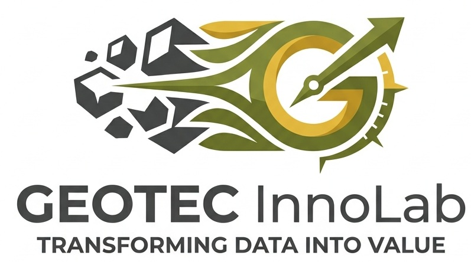
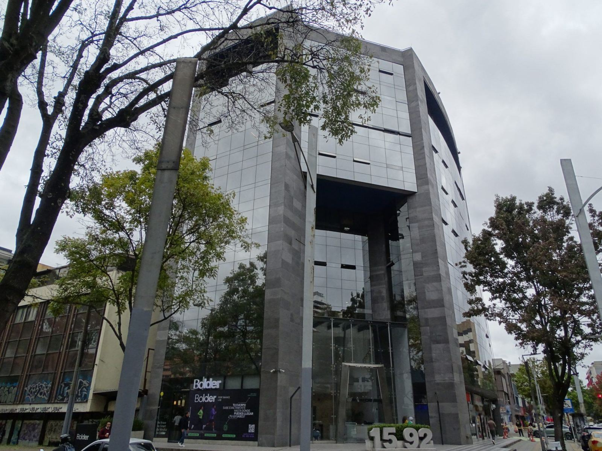

Operación distribuida
Validación por lotes en aplicaciones portables, captura de campo sin conexión y procesamiento documental en infraestructura local.
Escala en: instancias de ejecución y número de brigadas

Respuesta al sondeo de mercado CENIT · VH-2026-369Laboratorio de innovación ambiental
GEOTEC InnoLab es el laboratorio de innovación de GEOTEC INGENIERÍA LTDA: un portafolio propio de 91 herramientas en producción que cubre el ciclo completo del dato ambiental —captura en campo, validación normativa, generación documental y consulta asistida—. Ninguna fue comprada ni adaptada de un tercero: cada una nació resolviendo un cuello de botella concreto de proyectos reales tramitados ante la autoridad ambiental colombiana.
Esa procedencia explica el resultado: herramientas que resuelven el problema tal como aparece en un expediente colombiano, y no como lo describe un manual genérico.
Presentación de respaldo técnico para evaluadores del sondeo de mercado. Cada cifra es verificable contra el documento de capacidades.
El reto
Un proyecto ante la autoridad ambiental mueve información geográfica bajo un modelo de datos oficial de catálogo cerrado —el definido por la Resolución 2182 de 2016—, donde cada capa, campo y relación tiene una definición exacta y una sola desviación basta para que una entrega se devuelva. A eso se suman expedientes documentales extensos, campañas de campo en zonas sin conectividad y múltiples disciplinas que deben producir información coherente entre sí.
El escenario se complica cuando intervienen varios terceros ejecutores y actores territoriales: la calidad del dato final depende de que todos capturen bajo el mismo criterio, y la revisión manual al final del proceso convierte cada hallazgo tardío en reproceso, pérdida de coherencia y riesgo de no conformidad en cadena.
La respuesta de InnoLab es trasladar el control al momento en que nace el dato y automatizar la verificación contra el estándar, de modo que cada fase entregue a la siguiente información ya conforme.
Control desde el origen del dato: cada entrega queda documentada como evidencia, no como declaración.
Qué ofrece InnoLab
Las capacidades se agrupan en cinco líneas que recorren el ciclo completo del dato socioambiental: desde su captura en campo hasta su consulta y publicación. Cada una puede contratarse de forma independiente o integrada según el alcance que CENIT defina.
▸ Pulsa cada línea para desplegar el detalle técnico, o salta directo desde las etiquetas:
Validación automatizada de la información geográfica contra el modelo de almacenamiento oficial de la autoridad ambiental, con perfiles diferenciados según el tipo de trámite.
El motor evalúa el modelo completo —242 objetos entre clases de entidad y tablas, 4.799 campos, 308 dominios y 400 relaciones— a través de 29 módulos organizados en 5 ejes: estructura, calidad documental, consistencia temática, validación espacial y reportes. Los hallazgos se clasifican en 4 niveles de severidad según la criticidad de la regla, y un módulo de comparación entre versiones de geodatabase identifica qué se corrigió, qué persiste y qué se deterioró entre entregas.
Cada entrega sale acompañada de un certificado de conformidad trazable, con el registro de las reglas evaluadas, la fecha y la versión del conjunto de datos.
Entregable — Certificado de conformidad por entrega, con hallazgos priorizados por severidad y soporte verificable.

Formularios estructurados para dispositivos móviles que operan sin conexión, pensados para las condiciones reales del territorio colombiano.
Listas de valores controladas, campos obligatorios condicionados y validación en el punto de captura: el dato nace conforme al estándar en lugar de corregirse después. La evidencia fotográfica se estampa automáticamente con fecha, hora y coordenada, y el paquete de campo se convierte en geodatabase y visor sin intervención manual. La línea incluye verificación de coberturas con aeronaves no tripuladas operadas por pilotos certificados.
Registros de campo con metadatos automáticos de fecha, hora y posición, integrados a la misma cadena de datos que alimenta la entrega final.
Entregable — Paquete de campo trazable convertido directamente a geodatabase, sin transcripción intermedia.
Consulta automatizada de fuentes oficiales de información geográfica, instrumentos de ordenamiento territorial e información del recurso hídrico.
Clientes automatizados reúnen el contexto territorial de un proyecto antes de la salida a campo —no días después—, con construcción de geodatabases de contexto, visores por proyecto y disposición de la información en formatos abiertos y reutilizables cuando deba ponerse a disposición del público.
Contexto territorial consolidado y consultable antes de movilizar equipos, con trazabilidad de la fuente oficial de cada insumo.
Entregable — Geodatabase de contexto y visor por proyecto, con información en formatos abiertos.
Consulta en lenguaje natural sobre expedientes, actos administrativos y estudios, con respuestas citadas al documento y la página de origen: cada afirmación es verificable.
El procesamiento se ejecuta 100% en infraestructura local con hardware dedicado: la información no viaja a servicios de inteligencia artificial en nube pública ni se usa para entrenar modelos de terceros. La línea incluye generación asistida de matrices de consistencia entre capítulos, extracción y formateo de tablas, transcripción automática de reuniones y elaboración de informes.
Cada respuesta llega con su cita documental, de modo que el revisor puede contrastarla contra el expediente en el punto exacto de origen.
Entregable — Respuestas citadas a documento y página, matrices y borradores generados sin salir del perímetro del cliente.
Instrumento de evaluación y priorización de iniciativas con criterios parametrizables, escalas controladas y semaforización automática.
Una compuerta de decisión verifica condiciones en cascada e indica el primer requisito incumplido cuando un elemento no puede avanzar. Cada iniciativa registra estado, responsable, siguiente acción y bloqueador activo sobre un tablero que se recalcula en vivo. Es el mismo instrumento que gobierna hoy las 160 iniciativas del portafolio de InnoLab.
El propio portafolio de InnoLab opera bajo este modelo y es demostrable en funcionamiento durante una sesión técnica.
Entregable — Tablero en vivo con puntuación calculada, semaforización y trazabilidad de decisión por iniciativa.
Cómo crece
Cada fase amplía la unidad de escalamiento —de instancias de ejecución a terceros habilitados— y el paso de una a la siguiente no exige rediseño ni migración de la información ya procesada. El dimensionamiento definitivo se propone validar con una prueba sobre información real del cliente en fase piloto.
Validación por lotes en aplicaciones portables, captura de campo sin conexión y procesamiento documental en infraestructura local.
Escala en: instancias de ejecución y número de brigadas
Entorno de ejecución centralizado, portal de herramientas y servidor de sincronización de campo autoalojado, con respaldo y control de versiones.
Escala en: usuarios concurrentes de campo y proyectos activos
Validación y certificación expuestas como servicio, invocables desde la plataforma corporativa que el cliente defina, con tablero de trazabilidad por proyecto.
Escala en: integración con sistemas del cliente, sin instalación por usuario
Publicación de información en formatos abiertos, modelo de agrupación de compensaciones y habilitación certificada de contratistas.
Escala en: número de terceros habilitados bajo el mismo estándar
El crecimiento se produce ampliando capacidad de cómputo, cobertura de campo e integración — no añadiendo licencias por usuario. Los componentes de base se distribuyen bajo licencias libres, de modo que extender el estándar a decenas de contratistas ejecutores no multiplica costos de licenciamiento.
Confianza
El modelo de seguridad de InnoLab no es una restricción añadida sobre una arquitectura de nube: es una propiedad del diseño. El dato se procesa donde reside y no se transfiere a servicios externos.
La consulta documental con IA opera sobre infraestructura local con hardware dedicado: la información no viaja a servicios de terceros.
Ningún dato se emplea para entrenar modelos externos ni se expone a servicios de inteligencia artificial en nube.
El servidor de sincronización de campo puede autoalojarse en la infraestructura del cliente: el dato —incluido el de comunidades y grupos étnicos— no sale de su perímetro.
Los módulos de validación son aplicaciones portables sin conexión de red ni puertos expuestos, y la operación centralizada corre en máquina virtual corporativa.
Los registros de campo llevan metadatos automáticos de fecha, hora y posición; cada validación genera un registro de reglas, fecha y versión que acompaña la entrega.
La autenticación se apoya en el directorio corporativo y el modelo de permisos del cliente. InnoLab no sustituye la gestión de identidades: se integra a ella.
Los componentes de base son software libre bajo licencias abiertas: el área de seguridad del cliente puede inspeccionar su comportamiento.
La arquitectura está diseñada bajo el principio de no transferencia de datos personales a terceros, en línea con el régimen colombiano de protección de datos.
Para que la evaluación se haga sobre información exacta, declaramos explícitamente:
Registro criptográfico de cada evidencia en el momento de la captura: cualquier alteración posterior se vuelve detectable.
Garantiza la procedencia e integridad del software entregado al cliente.
Formaliza el gobierno de seguridad hoy implícito en la arquitectura, con clasificación documental del área.
Habilita el cumplimiento de requisitos corporativos de contratación.
Demostrado
Estas líneas no son un plan: funcionan hoy dentro de la operación de GEOTEC y de proyectos con clientes de su ecosistema. El instrumento de gobierno del portafolio —el mismo que se ofrece en la línea 5— administra estas cifras y puede demostrarse en sesión técnica.


Clientes del ecosistema GEOTEC donde estas capacidades operan:
Lo que está en desarrollo
Una evaluación técnica seria requiere información exacta sobre lo que existe y lo que está en desarrollo. Por eso declaramos el límite y, a la vez, la ruta para resolverlo.
El escalamiento actual es por lote y por despliegue: instancias de ejecución, brigadas de campo y proyectos activos. No ofrecemos hoy una capa web concurrente de uso masivo, ni lo presentaremos como existente.
Cuando ese requisito exista, InnoLab aporta la capa de validación, certificación y verificación en campo como servicios consumibles, invocables desde la plataforma corporativa que CENIT determine — sin instalación por usuario y sin exigir rediseño de lo ya procesado.
Siguiente paso
Agenda una sesión técnica: mostramos el portafolio en funcionamiento, el tablero que gobierna las 160 iniciativas y una validación sobre información real de muestra.
Tecnología que ya opera: se muestra en sesión, no se promete en papel.
Respuesta al sondeo de mercado CENIT VH-2026-369 · GEOTEC INGENIERÍA LTDA. — InnoLab